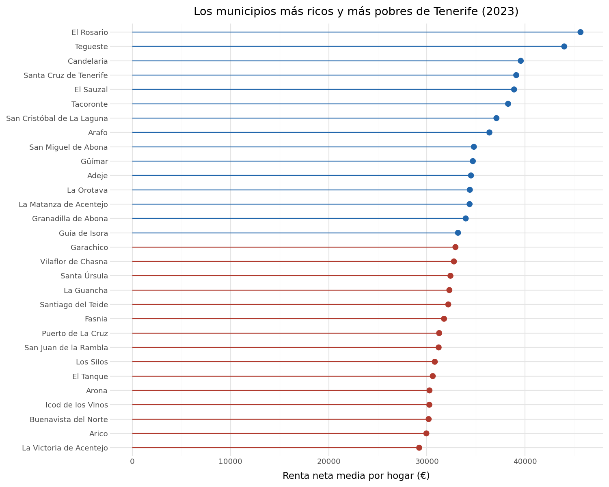
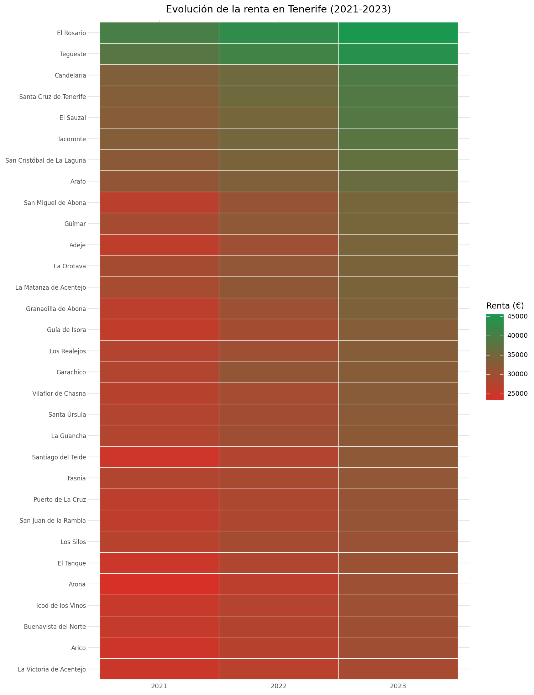
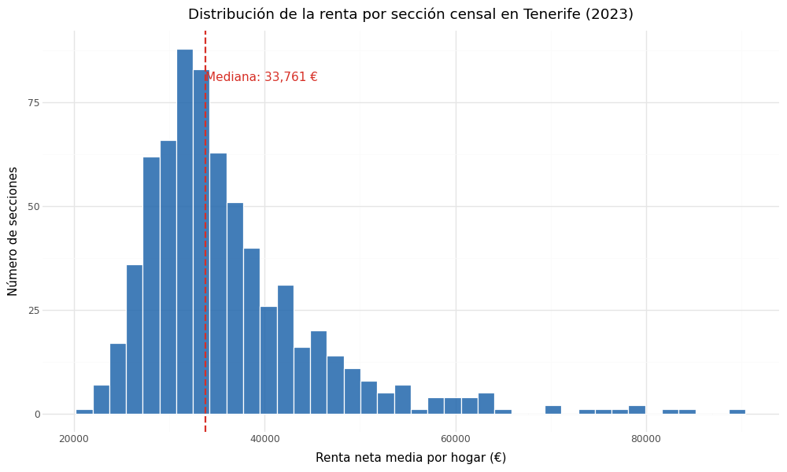
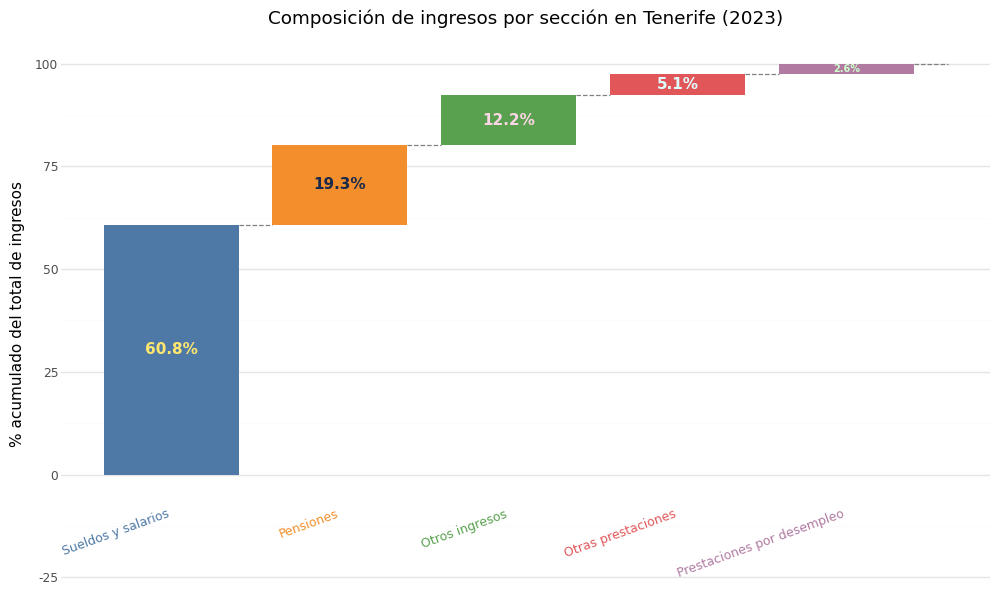
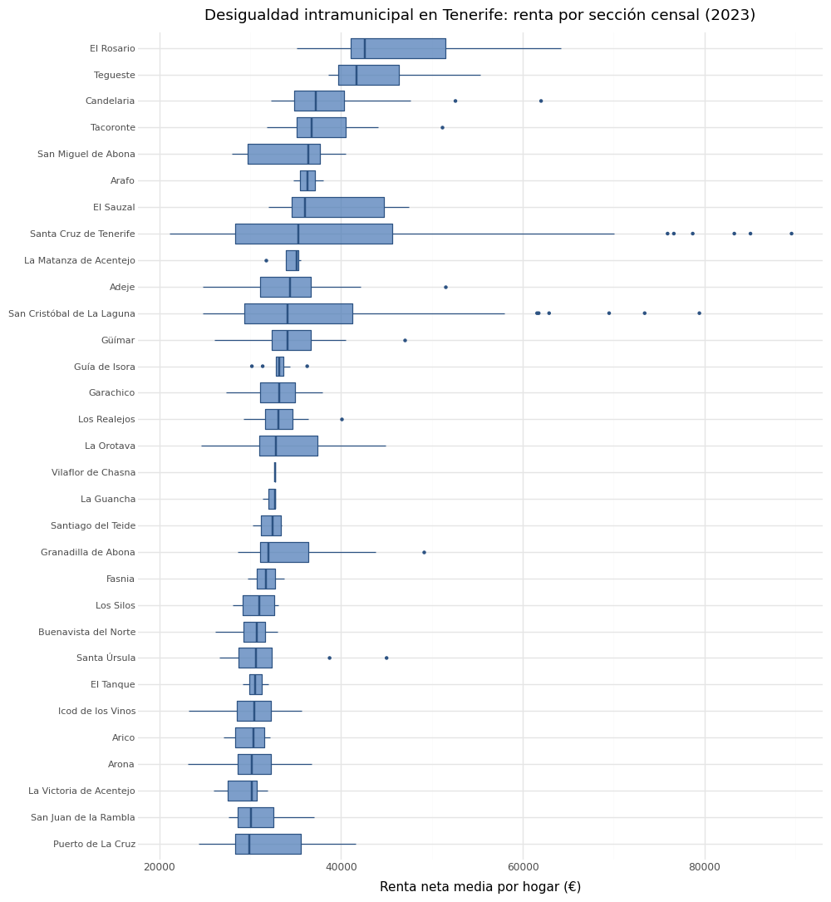
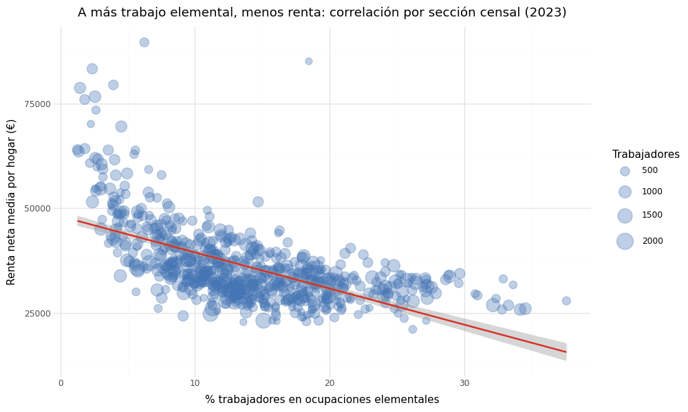
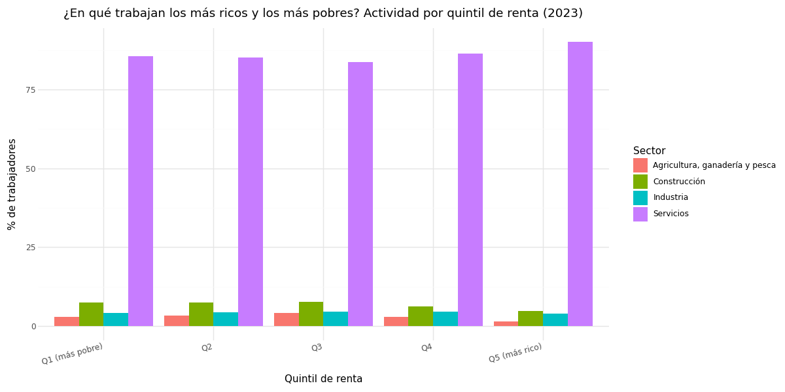

Ranking de municipios (2023)
Los 15 municipios con mayor y menor renta neta media por hogar en Tenerife. La brecha entre extremos supera los 30.000 euros.
Análisis visual de la desigualdad económica en el archipiélago canario: renta, ocupación y brecha de género por municipio y sección censal.

Los 15 municipios con mayor y menor renta neta media por hogar en Tenerife. La brecha entre extremos supera los 30.000 euros.

Heatmap municipal 2021-2023. Los municipios del norte mantienen rentas altas; el sur turístico concentra los valores más bajos.

Histograma de la renta neta media por hogar en todas las secciones censales de la provincia (2023).

Composición porcentual de los ingresos según quintil de renta. El Q1 depende de prestaciones; el Q5, del trabajo.

Dispersión de renta entre secciones censales de cada municipio. Santa Cruz concentra los extremos más pronunciados de toda la provincia.

Correlación negativa entre porcentaje de ocupaciones elementales y renta media por sección censal.

Distribución del sector de actividad según quintil de renta. El sector servicios engloba realidades económicas opuestas.
Explora la desigualdad a nivel de sección censal en el mapa interactivo.
Ver Mapa Interactivo